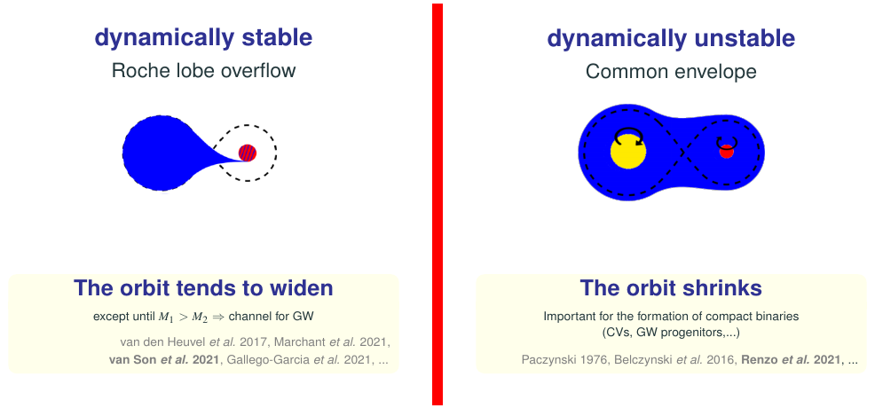
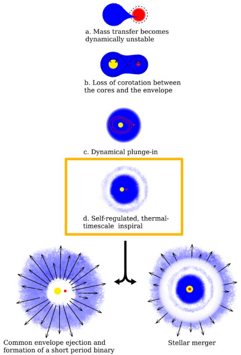

Materials: Webbink 1975, Paczynski 1976, Ivanova et al. 2013, Renzo et al. 2021, Ropke & de Marco 2023, Ivanova et al. 2020.
Dynamically unstable mass-transfer
As stars evolve, their radius tends to overall increase. We have seen that in a binary system, this can lead the more massive and faster evolving star to fill its Roche lobe and initiate mass transfer.
Depending on the orbital response, mass transfer can be dynamically stable (often only referred to just as Roche lobe overflow RLOF, although the Roche lobe is filled in both cases), or dynamically unstable (often referred to as "common envelope", CE).
N.B.: CE is not the only possible dynamically unstable mass-transfer, for example in a triple system, the secular perturbations on the inner orbit by the third body, plus the evolutionary changes of the stars (radius, wind mass loss, etc.) can lead to dynamical instabilities of the orbit.

The stability of mass-transfer is an important bifurcation point in the evolution of a binary system, since typically conservation of angular momentum dictates that stable RLOF leads to an overall widening of the binary (assuming the mass-ratio gets reversed during the mass-transfer), while CE leads to a shrinking of the orbit.
N.B.: The details of the orbital evolution depend on the accretion flow, whether it occurs through a disk or a direct impact, how conservative mass-transfer is, and how much angular momentum is carried away by the non-accreted material.
In fact, the original idea of a CE (Webbink 1975, Paczynski 1976) comes from trying to explain cataclismic variables, which are binaries with a main-sequence star and a WD, with orbital separation much smaller than the expected maximum radius of the WD progenitor. It was therefore designed as a process resulting in the decrease of the orbital separation.
Unfortunately, the boundary between the two modes of mass transfer remains elusive, and semi-analytic criteria are still common to decide the outcome in rapid binary population synthesis calculations.
Stability criteria
Soberman et al. 1997 formalized analytically a stability criterion for mass transfer, based on the response of the donor star radius to the change of mass caused by the transfer of mass. Their criterion is still widely adopted.
The defined parameters \(\zeta=d\ln R/d\ln M_{\rm donor}\) with \(R=R_{\rm donor}\) donor radius and \(R=R_{\rm RL,1}\) Roche lobe of the donor. As mass is being transferred, \(M_{\rm donor}\) decreases and its radius changes, at the same time, the redistribution of mass (and angular momentum) in the binary can change the orbit and the size of the Roche lobe of the donor.
If during mass-transfer \(\zeta_{\rm donor} < \zeta_{\rm RL,1}\), then the readjustment of the donor is too "slow" compared to the readjustment of the orbit and this will lead to a dynamical phase: the orbit shrinks faster than the donor star, therefore the amount of Roche lobe overflow increases triggering a runaway process.
However, calculating the \(\zeta\) parameters requires having out-of-thermal equilibrium stellar models and prescribing a rate of mass-transfer. Therefore, it is also common to rephrase this criterion in an equivalent form based on the mass-ratio \(q=M_{\rm accretor}/M_{\rm donor}\): if this mass ratio is more extreme than a certain threshold \(q_{crit}\) then the evolutionary timescales of the two stars will be too different, the donor will try to donate on its timescale, the accretor will not be able to accrete the mass and inflate because of the excess thermal energy in the outer layers, leading anyways to a CE.
N.B.: In practice there can be different values of \(q_{crit}\) for each evolutionary phase of the donor (whether it is a case A mass transfer with a main sequence donor or a later mass transfer can influence the stability!)
These stability criteria are widely used, but also widely debated. In nature there may be more than one way to initiate the common envelope:
- Donor's Roche lobe overflow runaway increase
- The binary loses mass from the L2 Lagrangian point, leading to large angular momentum losses and inspiral
- Accretor's cannot accept mass fast enough and swell until both stars fill their Roche lobe
- Darwin instability
Many of these processes occur on a (relatively long) thermal timescale of the donor star, which makes it hard to study directly with numerical simulations and/or observations.
Common envelope evolution

Mass-transfer initiates and it is likely that for order of a thermal timescale, the two object in the binary still remain distinct (see e.g., Blagorodnova et al. 2021). Modifications to the mass-budget and structures during this phase are often neglected in the study of CE.
If mass transfer does become dynamically unstable, at some point the gas will fill the equipotentials surfaces of the Roche geometry around both stars (those in between L1 and L2 at least). At this point we have either two stellar cores in the shared envelope, or the accretor star entering the envelope of the donor. These bodies cannot maintain co-rotation with the envelope because of either envelope expansion changing its rotational frequency, gas drag, or Darwin instability.
Therefore, the lack or loss of co-rotation (if it was initially present) necessarily leads to friction between the stars and the shared envelope, and causes a dynamical plunge-in. In a matter of few (possibly less than one) orbit, the separation drops dramatically, and the orbital energy released by the plunge in is given to the envelope. The efficiency of this process is still very debated (see below).
During the plunge-in, the quadrupole moment of the binary will be changing with a non-zero second derivative: there should be GW emission!
The deposition of orbital energy into the envelope leads to its expansion, decreasing the density and consequently the drag on the inner binary: the plunge in can stall.
If a stalled phase occurs, then the evolutionary timescale will increase from dynamical (during the plunge-in) to thermal: the minimal drag still drives an inspiral but on a long timescale. During this phase (if present), GW emission from the inner binary may reach the LISA band, and if observed, it would passively trace what is occurring inside the shared (and opaque to photons) envelope.
N.B.: GW do not drive the inspiral, but trace how it occurs!
At the very end, we expect another dynamical phase that can either:
- result in a stellar merger (e.g., if the donor core fills its Roche lobe within the shared envelope)
- the successful ejection of the shared envelope (interrupting the drag), and the formation of a tight period binary
Direct numerical simulations of CE
Common envelope evolution, since it's theorization in the 1970s by Paczynski, Webbink, Taam, and Ostriker, remains one of the biggest open questions in stellar physics that impacts the formation of all compact binaries (cataclysmic variables made of a main sequence plus a white dwarf, binary white dwarfs, gravitational wave sources, etc.) and most stellar mergers.
Hydrodynamical simulations (possibly including radiation and/or magnetic fields) of the problem are possible and actively done, but typically they can only capture the plunge-in (dynamical timescale) and the resolution is most of the time insufficient to capture the inner core. The example below shows the density of a CE simulation with the code FLASH from Landri et al. 2025 ending in a merger:
Energetic considerations for CE outcome
In lack of a viable first-principle approach to CE, we often rely on simple conservation laws arguments to try to map the pre-CE to the post-CE state. This was originally proposed by Webbink 1984 where the infamous parameter \(\alpha_{CE}\) was introduced.
The core idea is to relate a fraction \(\alpha_{CE}\) of the change in orbital energy as the binary spirals in, to the binding energy of the (pre-CE) envelope:
where we implicitly assume that the mass of the envelope to be ejected is \(M_{}_{\rm env} = M_{1} - M_{\rm 1, core}\), that the secondary star \(M_{2}\) does not change mass, and \(a_{i}\), \(a_{f}\) are the pre- and post-CE separation.
The binding energy of the envelope is almost always calculated based on the structure of the donor star envelope before the onset of mass transfer:
where \(\lambda_{CE}\) is a dimensionless parameter that encapsulate the details of the mass distribution in the donor introduced by de Kool 1990.
Within this framework, for a given donor (i.e., a given \(\lambda_{CE}\), \(M_{1}\) and \(M_{env}\)), accretor, initial separation \(a_{i}\) and assumed "efficiency" \(\alpha_{CE}\), we can solve for the final separation \(a_{f}\). If \(a_{f}\) is such that the core would fill its Roche lobe at the end of the CE, it is often assumed the CE results in a merger. Otherwise, this energy balance argument gives the final post-CE separation.
This simple picture was designed as an order of magnitude argument, but has become a standard algorithmic practice, because the detailed picture remains opaque. However, several issues exist:
- \(\alpha_{CE}>1\) have been invoked to explain systems, while this apparently violates conservation of energy, in reality energy sources other than the orbit may play a role, such as accretion (e.g., if one of the stars is a compact object), recombination of gas, etc.
- The initial conditions are often not well defined: should we consider the moment of the onset of mass transfer, or when the mass transfer becomes dynamical? For simplicity, often the former is assumed without justification
- The efficiency of the energy deposition is presently unknown.
Luminous red novae
- V1309Sco (Pejcha & Metzger 2015)
- V838Mon